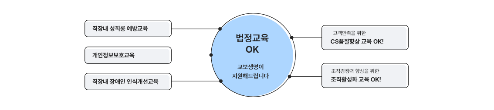

FP(재무설계사)
다윈(DA_Win)서비스는 기업, 단체, 고객사에 명품 CS교육을 제공해 FP가 갈 곳을 마련해 줍니다.

법정교육 OK 교보생명이 지원해 드립니다.
- 직장 내 성희롱 예방교육
- 개인정보보호교육
- 직장 내 장애인 인식개선교육
- 고객만족을 위한 CS품질향상교육 OK!
- 조직경쟁력 향상을 위한 조직활성화교육 OK!
앞서가는 기업이 되고 싶다면 교보생명 다윈서비스를 만나 보세요!
-
행정기관(2,105개)
- 대법원, 경찰서(전국), 국세청(전국), 원주시청, 세종시청, 종로구청 등
-
공공기관(3,612개)
- 국민연금공단, 근로복지공단, 교통안전공단, 한국산업안전공단, 한국농어촌공사, 한국전기공사 등
-
의료기관(4,071개)
- 국립암센터, 보훈병원, 건국대학교병원, 부산대학교병원, 순천향대학교병원 등
-
일반기업(3,756개)
- 코스트코코리아, 본아이에프, 혼다코리아, 한국피자헛, 르노삼성, 롯데관광 등
-
교육기관(565개)
- 서강대, 동국대, 강원대, 숙명여대, 군산대학교, 제주대학교, 성공회대학교 등
-
단체/기타(1,029개)
- 대한의사협회, 서울시의회, 장애인복지관, 한국음식중앙회, 노인종합복지관, 예술의전당 등
준법감시인확인필 3-2106-2 조직순증지원팀(2021.06.17)